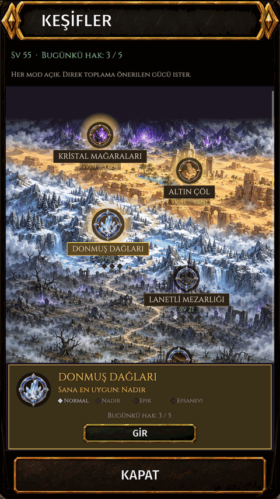
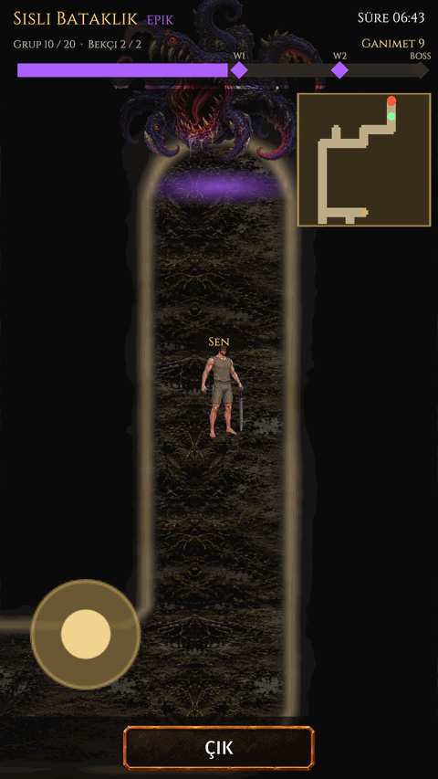

Keşifler
Nedir
Bir alanı oda oda keşfet ve bossuyla dövüş; bosslar atölye aleti düşürebilir.
Nasıl gidilir
- Alt çubuk: MÜCADELE.
- KEŞİFLER tabelası.


Bir alanı oda oda keşfet ve bossuyla dövüş; bosslar atölye aleti düşürebilir.

